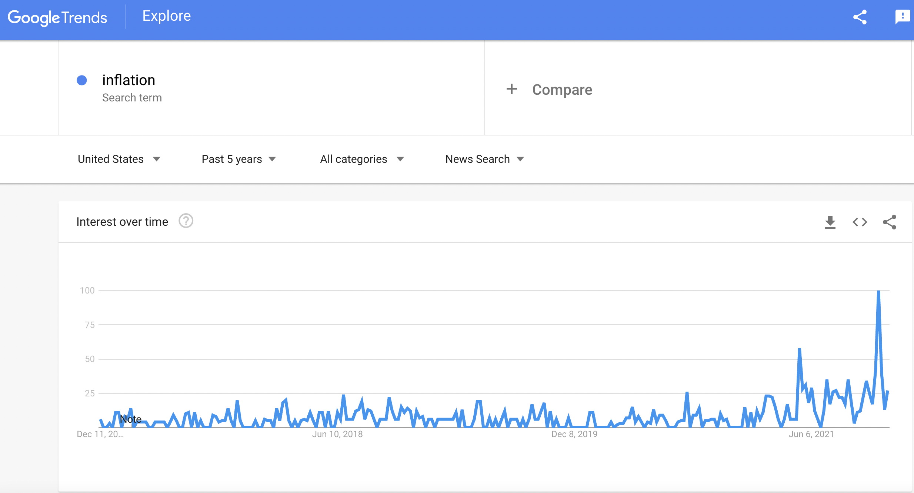

Project Info and Description
Motivation:
From the meat sold at Costco to the used vehicles in the market right now, the price of everything is skyrocketing. Everyone could feel the inflation, and everyone is talking about inflation. While the chief market economist at Goldman Sachs Dominic Wilson believed inflation is "transitory," what does it mean for an average person? In this project, we would like to quantify the inflation to concepts that average persons understand.
Design Rationale:
We'd like to start by collecting some user input to make the storytelling process more compelling and user-oriented. After identifying the user's name and age, we rendered the welcome page based on the information the user-provided. This would probably make the user thinks that they are special and the webpage is uniquely designed for them.
Then we would just present the user with the striking percentage of price change during his/her/its lifetime. This should encourage the reader the read through to the end of our webpage. In the following charts, we illustrate how 4 easy to understand things in life, aka beef, pork, gas, and home prices increased from the 1970s. The user would then given the ability to learn more about the different stage of the inflation and if certain events in history has drastically affected inflation in a given period. Then we compare the income increase with the price increase, and show the user that their actual purchasing power are indeed decreasing.
All in all, we would provide our sincere advice to the individual reading our webpage on what should they do. But we also recognize it is impossible and irresponsible to provide a simple response given every one could have different background.
Data Processing:
We downloaded the datasets from government agencies, industry commissions, and research institutes, which represent authenticity, accuracy, and validity. However, several problems remained. For instance, we did not find the data for monthly average gas prices prior to April 1993, but we do have the annual average gas prices prior to that date. So we used the annual average gas prices for every month in those years, which makes the chart show some horizontal lines.
Checkout the walkthrough video:
Work Distribution: